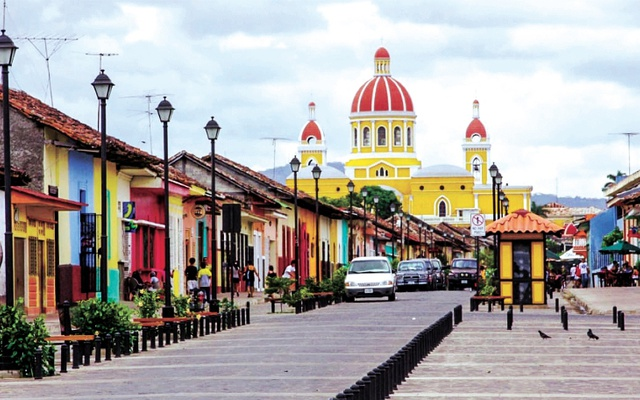

PLANEA TU EXPERIENCIA
Si usted está planeando para unas vacaciones familiares, viaje romántico o un viaje de último minuto, puede estar seguro de que cada paquete de viaje que usted encuentra en Schuvar Tours será inolvidable.


Si usted está planeando para unas vacaciones familiares, viaje romántico o un viaje de último minuto, puede estar seguro de que cada paquete de viaje que usted encuentra en Schuvar Tours será inolvidable.
Cualquier destino del mundo es posible para tus próximas vacaciones. Schuvar Tours te ofrece los mejores precios en paquetes vacacionales y a los mejores destinos. No esperes más y consulta ahora nuestra amplia oferta a los destinos internacionales más reconocidos

 La capital departamental, la ciudad de León, es la segunda en importancia del país y una de las más majestuosas ciudades coloniales de todo centroamérica, pues fue una de las primeras ciudades que fundaron los españoles al llegar al continente.La ciudad de León, cuyo nombre original es Santiago de los Caballeros de León fue fundada el 19 de junio de 1524 por Francisco Hernández de Córdoba, cerca del poblado indígena de Imabite y en la orilla del volcán Momotombo. En el año 1610, debido a fuertes movimientos sísmicos y a una enorme erupción del volcán Momotombo la ciudad tubo que trasladarse la ciudad hacia su nueva ubicación, la actual, junto al pueblo indígena de sutiava. De la erupción del volcán Momotombo, que mató a gran parte de la población de la ciudad, queda el recuerdo de León Viejo, donde actualmente se pueden visitar las antiguas ruinas.Aunque con menos población que Managua, León ha sido la sede intelectual de la nación, con una universidad fundada en 1813, siendo la última fundada en América antes de la independencia y que fue la más importante de centroamérica por un siglo completo. León es también un importante centro industrial y de comercio de Nicaragua..
La capital departamental, la ciudad de León, es la segunda en importancia del país y una de las más majestuosas ciudades coloniales de todo centroamérica, pues fue una de las primeras ciudades que fundaron los españoles al llegar al continente.La ciudad de León, cuyo nombre original es Santiago de los Caballeros de León fue fundada el 19 de junio de 1524 por Francisco Hernández de Córdoba, cerca del poblado indígena de Imabite y en la orilla del volcán Momotombo. En el año 1610, debido a fuertes movimientos sísmicos y a una enorme erupción del volcán Momotombo la ciudad tubo que trasladarse la ciudad hacia su nueva ubicación, la actual, junto al pueblo indígena de sutiava. De la erupción del volcán Momotombo, que mató a gran parte de la población de la ciudad, queda el recuerdo de León Viejo, donde actualmente se pueden visitar las antiguas ruinas.Aunque con menos población que Managua, León ha sido la sede intelectual de la nación, con una universidad fundada en 1813, siendo la última fundada en América antes de la independencia y que fue la más importante de centroamérica por un siglo completo. León es también un importante centro industrial y de comercio de Nicaragua..
El departamento de Granada está formado por los municipios de Diriá, Diromo, Nandaime y su cabecera, la Ciudad de Granada.En el departamento están también los llamados “pueblos blancos” que son muy interesantes de conocer, Diriomo y Diriá.Diriomo es conocido popularmente como “El pueblo de los Brujos” y es una localidad campesina asentada cerca de la base del Volcán Mombacho. La Joya del lugar es el famoso templo parroquial construido con puras piedras trasladadas por los indígenas en la época de la colonización. En su interior se pueden admirar reliquias religiosas y frescos espectaculares en sus paredes.Nandaime, es el segundo municipio en importancia del departamento de Granada, el nombre es de origen Chorotega y viene de “nanda-ime” que significa “arroyo-abundancia”. además de tener parte de la orilla del lago Cocibolca, está situada cerca de tres Reservas Naturales importantes